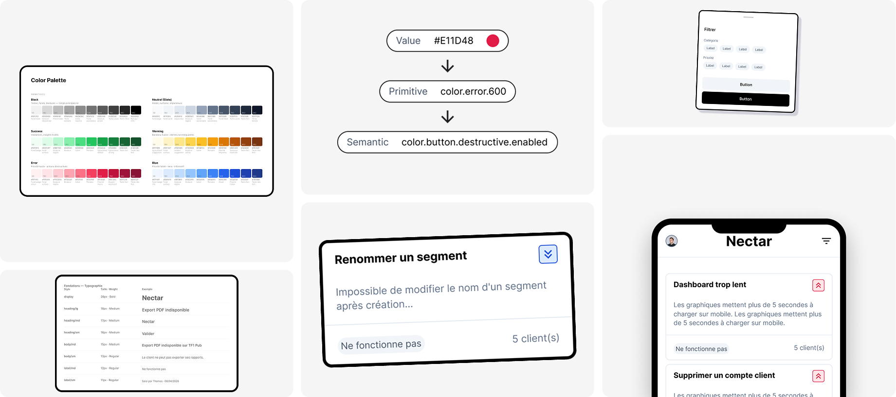
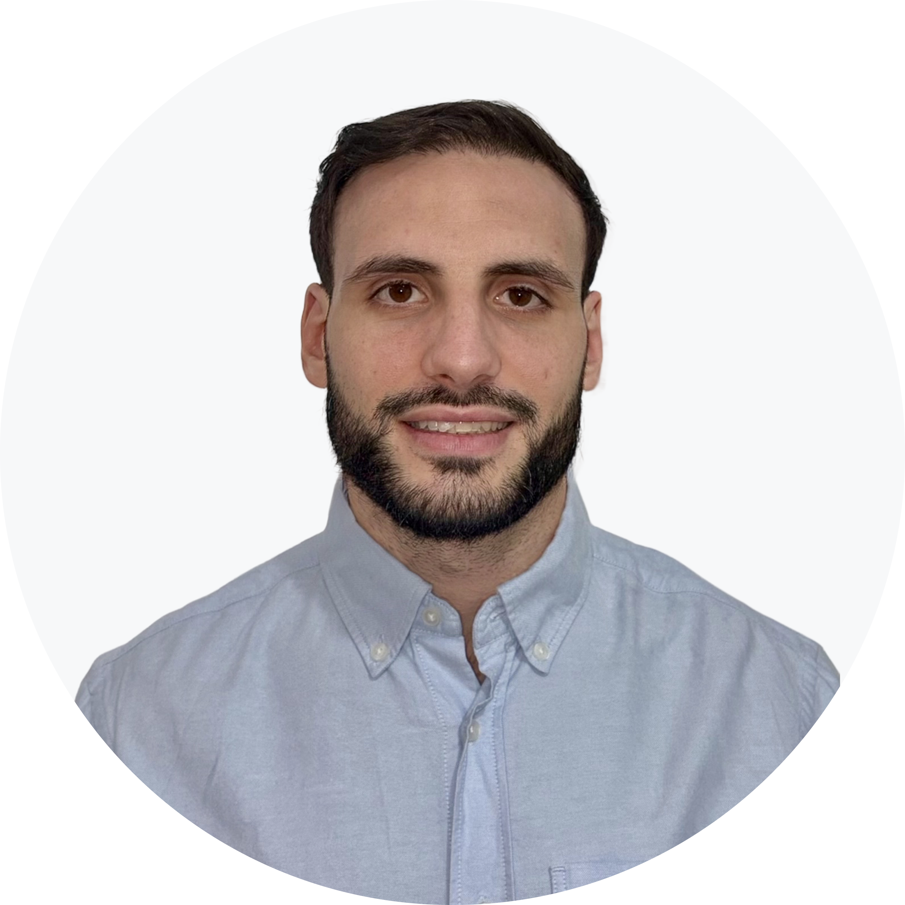
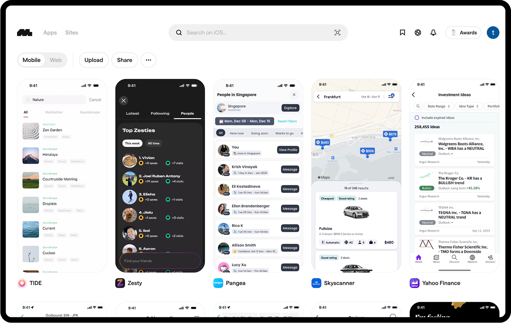
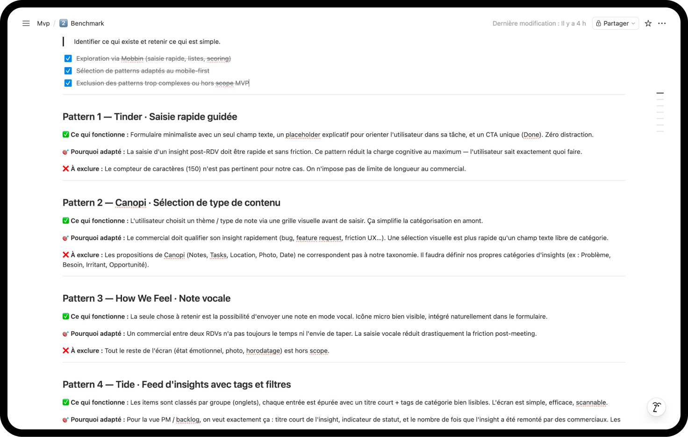

UX ResearchBenchmarkFigma MakeDesign SystemClaude MCPFounding Design IA
Nectar
AI Product Designer · Projet personnel — B2B SaaS · En cours · Figma · Figma Make· Claude · Supabase · Vercel
Lecture · ~5 min
70 à 80% des insights terrain des commerciaux ne parviennent jamais aux Product Managers. J'ai conçu Nectar pour résoudre ce problème — et pour formaliser un process de conception entièrement piloté par IA, de la recherche utilisateur au développement.
1
designer-développeur — de la recherche au produit
6
phases du process pilotées par IA
45
variants Figma générés via MCP Claude
100%
du process piloté par IA
Aperçu du produit

Du Design System au produit — variables, composants et interfaces
Contexte
Le produit
Nectar est un outil mobile-first B2B permettant aux commerciaux de capturer leurs insights post-RDV en moins d'une minute et de les transmettre directement au backlog produit sous forme de cartes priorisées.
Deux objectifs : concevoir un MVP avec une priorisation déterministe et transparente, et formaliser un process de conception piloté par IA, réplicable. Je pilote ce projet seul — de la recherche au développement.
Phase 01
Conception — pilotée par IA
Recherche utilisateur, définition produit, benchmark, idéation et Design System — chaque étape assistée par Claude.
01 — Recherche
Entretiens utilisateurs & intégration de l'IA
J'ai mené des entretiens auprès de commerciaux et de Product Managers pour valider les hypothèses et comprendre leurs besoins réels. Dès cette étape, l'IA est intégrée à chaque phase du process.
Les retours sont clairs : les PM veulent des insights accessibles et priorisés, les commerciaux veulent pouvoir les remonter depuis leur mobile après un RDV — sans friction, sans reformulation.
ÉTAPE 01
Claude crée la trame
Guide d'entretien structuré généré par Claude — questions ouvertes, JTBD, frictions identifiées.
ÉTAPE 02
L'IA enregistre & retranscrit
Enregistrement et retranscription automatique de chaque entretien. Une demi-journée de travail économisée par session.
ÉTAPE 03
Claude synthétise
Analyse automatique des pain points, JTBD et opportunités à partir des retranscriptions.
ÉTAPE 04
Notion documente
Création automatique des comptes rendus dans un projet Notion dédié via Claude.
4 décisions produit définies : saisie rapide, reformulation IA, scoring par fréquence, mobile-first
1 journée de travail économisée par entretien grâce à la retranscription automatique
Comptes rendus générés automatiquement après chaque session
Compte rendu automatique dans Notion
02 — Définition
Principes de conception & cadrage produit
À partir des entretiens, Claude génère la définition du problème et les contraintes de conception.
3 champs de saisie maximum — saisie en moins d'une minute
Mobile-first — conçu pour l'usage post-RDV
IA frugale — titre normalisé + détection de similarité, aucune décision automatisée
Scoring transparent — calcul basé sur la fréquence clients, 100% automatique
Parcours utilisateur, choix des inputs/outputs et prompt IA générés par Claude à partir des comptes rendus d'entretien.
IA POUR LA DÉFINITION 02
Décider par la donnée
Formule de scoring, contraintes techniques et règles de matching définies et documentées avec l'aide de Claude.
IA POUR LA DÉFINITION 03
Formaliser & documenter
Zoning des composants, edge cases et compte rendu générés automatiquement pour alimenter la phase d'idéation.
03 — Benchmark
Méthodologie du benchmark
J'explore Mobbin à partir de requêtes générées par Claude pour identifier les patterns pertinents. Je sélectionne les résultats, les documente avec mes recommandations, puis Claude génère un compte rendu dans Notion qui sert de base à la phase d'idéation.
ÉTAPE 01
Claude génère les requêtes
Requêtes générées à partir des décisions produit : saisie rapide, feed scannable, badge de priorité, détection de similarité.
ÉTAPE 02
Recherche et Sélection dans Mobbin
Exploration de Mobbin avec les requêtes, sélection de 7 écrans pertinents, importés dans Figma pour analyse.

ÉTAPE 03
Documentation des patterns
Fiche de spécification pour chaque pattern : points forts, pertinence pour le MVP, éléments hors scope.
ÉTAPE 04
Claude documente dans Notion
Compte rendu structuré généré automatiquement — 7 patterns documentés, prêts pour l'idéation.
7 patterns UX sélectionnés et documentés avec points forts et pertinence
1 compte rendu structuré dans Notion, prêt pour la phase d'idéation

Patterns sélectionnés dans Mobbin

Compte rendu benchmark dans Notion
04 — Idéation
Prompt à destination de Figma Make
Les prompts sont construits avec Claude et intègrent les décisions précédentes : recherche, définition et benchmark. Figma Make génère les écrans pour explorer et itérer.
Saisie & backlog — flow liste → saisie → validation, structuration automatique des insights
Scoring & automatisation — logique basée sur la fréquence, objective et sans effort pour l'utilisateur
IA suggestive, jamais décisive — suggestions de titre proposées, l'utilisateur confirme ou modifie (pattern Linear)
15 edge cases identifiés et documentés
IA POUR L'IDÉATION 01
Contexte
Décisions UX issues des étapes précédentes compilées dans un document structuré.
IA POUR L'IDÉATION 02
Prompt généré par Claude
Prompt v1 intégrant le flow, l'anatomie des écrans, les contraintes de style et les edge cases.
STACK BACKEND
Supabase · Vercel · Claude API · Gemini Flash
1 endpoint IA : structuration des insights + détection de similarité. Déploiement continu sur Vercel.
DOCUMENTATION
Notion MCP · claude.md réplicable
L'ensemble du process est formalisé dans un fichier claude.md documenté et réplicable sur d'autres projets.
12 composants React conformes au Design System Figma